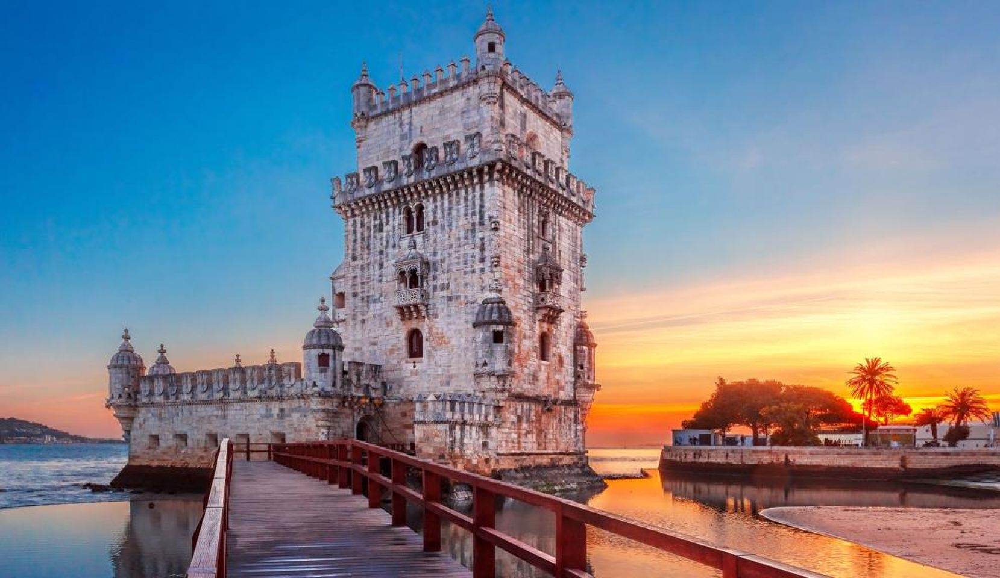

Lisbon Neighbourhoods
Alfama

The steep streets of Alfama, one of Lisbon’s oldest areas, are lined with shops selling traditional crafts and cafes. Passengers pack the historic no. 28 tram, which winds through Alfama on its way up to 11th-century São Jorge Castle. Views from Miradouro da Graça terrace stretch over the city to the River Tagus. In the evening, melancholy Fado music can be heard in some of the area's long-running restaurants
Bairro Alto

Visitors wander the steep cobbled streets of bohemian Bairro Alto to ride the Bica Funicular, visit lavish São Roque Church and take in the views from Miradouro de São Pedro de Alcântara. Many of the centuries-old houses in the neighborhood are decorated with vivid street art. After sundown, a diverse crowd fill the hip, quirky bars, while the evocative sound of Fado music is heard from traditional restaurants.
Belem
Belém is a laid-back area on the Tagus River, known for its seafood restaurants and houses decorated with colorful tiles. Among the area's shaded green lawns are historic landmarks that recall Portugal’s seafaring past, like the 16th-century Tower of Belém and the sail-shaped Discoveries Monument. Near the vast Gothic Jerónimos Monastery, the popular Pastéis de Belém patisserie is famed for its custard tarts
Baixa

Baixa is Lisbon’s historic heart and commercial center. Neoclassical architecture, built after the 1755 earthquake, surrounds Commerce and Rossio squares. Bustling pedestrianized streets are lined with traditional seafood restaurants and souvenir shops. The National Museum of Contemporary Art, in the upscale Chiado area, shows Portuguese art from the mid-1800s to today, and the Santa Justa Lift offers city views.
Chiado

Lisbon's shopping and theater hub, Chiado is home to the Rua Garrett shopping avenue and its high-end boutiques, restaurants, and the 1700s Bertrand Bookstore. Locals gather at bustling Praça Luís de Camões near the statue of the 16th-century poet. Close by, the Igreja da Encarnação and Igreja do Loreto churches feature ornate marble interiors, while the 1700s National Theatre of São Carlos has rococo decorations.